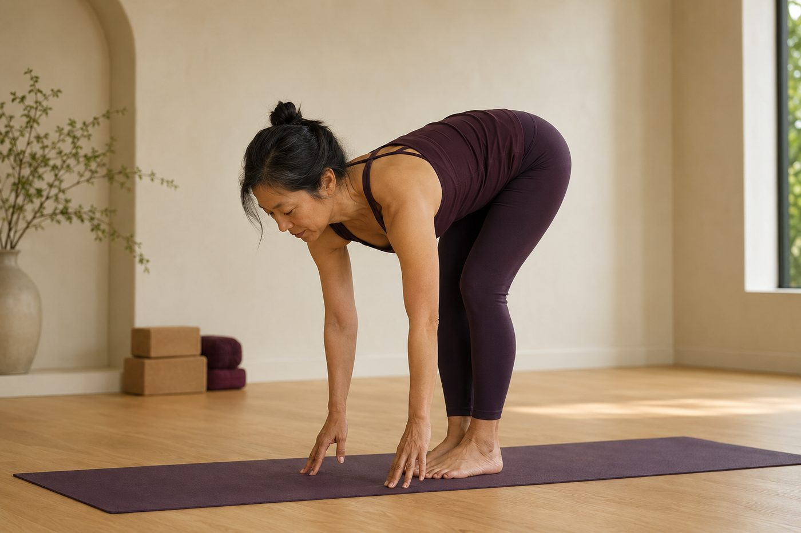

前彎摸不到腳尖，可以判斷柔軟度或髖活動度嗎？

老師帶到坐姿前彎，隔壁同學手已經碰到腳尖，你還停在小腿。你不一定想下得更深，只是想知道是不是自己的身體特別硬。
前彎能不能碰到腳尖，會受身體比例、膝蓋角度、骨盆和背部的動作分配，以及有無支點影響。可在相近條件下比較扶桌、膝略彎或減少幅度時的感受。手到哪裡只是一次觀察，不能單獨判定柔軟度、髖活動度或是哪個部位卡住。刺痛或麻木時先停止。
前彎摸不到腳尖，這個結果能說明什麼？
它可以描述你在這次站法、膝蓋角度和幅度下，手到達的位置。若突然改了站距、膝蓋角度或支點，結果也可能不同。可以記下是想抓腳尖才用力，還是做小幅度就不舒服，再決定下一步。
👆 手機版可左右滑動
| 這次看到或感受到 | 可以怎麼比較 | 不能用來判定 |
|---|---|---|
| 手只到小腿 | 記下膝蓋與站距，保持同樣條件再看。 | 髖是不是卡住。 |
| 膝蓋略彎或手扶支點後較自在 | 比較用力感和能否慢慢回位。 | 特定肌肉到底多長。 |
| 膝後刺痛、麻或無力 | 先停止動作，症狀持續時尋求評估。 | 靠感受分辨是肌肉、關節或神經。 |
如果我想比較扶桌和徒手呢？
可以減小幅度，看看扶桌後是否更容易停住與回位。想知道髖往後怎麼練，可看前彎摺髖篇。平常也一直想拉大腿後側的人，可接著看腿後反覆緊的情境。出現刺痛、麻木或無力時先退出動作。
常見問題
摸得到腳尖，就是動作做得好嗎？
它只是某次前彎的結果。練習更值得注意是否能控制幅度、維持呼吸並慢慢回位。
前彎就大腿後側緊，需要繼續拉嗎？
可以先減少幅度並觀察。若有刺痛、麻木或無力，先停止並依情況尋求醫療評估。
先記下最有感的日常時刻
先記下是穿鞋、收納還是課堂前彎最容易變成硬搆。
約 2 分鐘，免登入、免加 LINE。做完可用 3 天觀察卡整理日常感受。
開始免費 2 分鐘體態訊號掃描 →延伸閱讀 想練動作本身，可看怎麼找到摺髖感覺